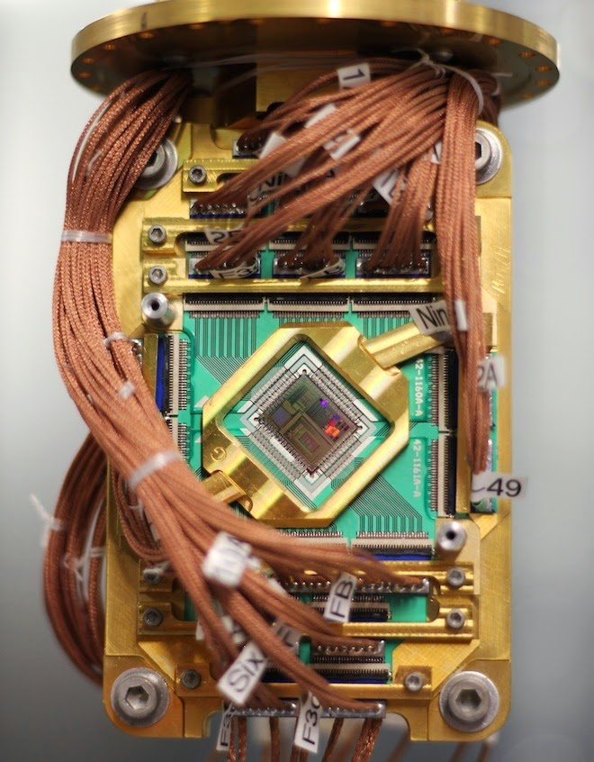

The Rise of Artificial Intelligence
 25th January 2014 |
25th January 2014 |  Comments
Comments
The future of artificial intelligence development is documented extremely well in this video. Especially important is the consideration that artificial intelligence will arise as a result of computer learning developments, not simply programmed rules. This is also an argument for the time frame we can expect artificial intelligence to arise from. A lot of rules emerge naturally from a learning machine, and although building such a creation will be an immense problem, one that may be humanities greatest and most influential problem, it is all but inevitable that it shall come to pass.
We have a footrace, from multiple sources, to get to artificial intelligence. It's clear that few organizations are looking to build full-fledged AI within the next decade; such a large leap would be quite a jump and is an exaggeration of our capabilities. However, we can see companies like Google, Facebook, and NASA all racing to complete the next step in artificial intelligence. It's clear from the work of the experts that the next step is the Conversational Computer.
Google already has the functionality available to interpret basic conversational questions. However, currently, it's a bit rudimentary and in need of fine-tuning. Not only Google is looking into this interpretation of so-called Big Data. Many of the companies currently working with artificial intelligence want to allow the quick digestion of massive sets of data through a variety of sensors, in a world where such sensors are growing exponentially in number through the proliferation of devices like smartphones, but also through the cost reduction in robotic sensing technologies.
In addition, these companies are looking into quantum computing. Alongside the conventional computer, quantum-based systems may allow for a whole new range of intelligent applications of programming. Google and NASA have teamed up to purchase a 512-qubit computer to see it's potential applications in the future of AI.
It is most certainly the true equivalent to previously groundbreaking supercomputers in the past like the Atlas computer. The only way to go is up in terms of power. We've already seen that quantum computing is subject to Moore's Law. How will it affect the future of AI? We will only see in the future.
So what can we expect from AI in the next decade? For sure, conversational machines are an inevitability. The Star Trek computer will definitely emerge before 2020. It may not have the complete functionality necessary to throw away your keyboard, but it certainly will be unlike any experience that humans have ever had in the past. Beyond that, in the 2020's, it is likely we will see near complete AI emerging. It again may need a lot of fine-tuning before it could be considered perfect, but there is no doubt that it will profoundly change the way we interact with the world. How will the adoption of a new global, electronic intelligence affect us? The answer to that question is what makes the future so exciting.
